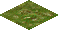
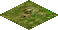
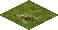
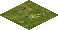
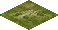
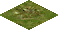
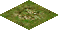
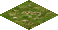
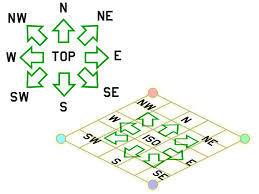

{kind=link}
{kind=link}
{kind=link}
{kind=link}
{kind=link}

Надеюсь, предыдущий пост Back-инжиниринг Caesar III, где был описан алгоритм получения текстур из ресурсов оригинальной игры, был благосклонно встречен хабражителями. В этой статье я опишу формат карт, алгоритм выбора и порядок тайлов для отрисовки, формирование итоговой текстуры.
Если знаете, что такое тайл (tile), тогда следующий раздел можно пропустить.
Тайл это картинка фиксированного размера, сформированное так, чтобы при рисовании рядом с другими тайлами получалось сплошное изображение без “швов”. Вот пример текстур травы из игры Caesar III©
       
Если составить их рядом в определенном порядке и добавить немного текстур с деревьями, то получится некоторая область земли.А если внести в эту живописную картину еще один вид тайла, например, с изображением дороги, то можно уже составить примитивную карту.
Вы, наверно заметили, что представленные изображения не квадратные, а ромбовидные. Сделано это для того, чтобы придать изображению ощущение объема( глубины ). Такой тайл выглядит повернутым одним углом к зрителю и как бы уходящим вглубь, двухмерная картинка приобрела третье измерение. Для создания эффекта объема ширина должны быть меньше длины примерно в два раза. База тайла в игре Caesar III составляет 58х30 пикселей, это минимальный размер тайла, которым оперирует движок игры. На первых этапах разработки ремейка получился один неприятный эффект, текстуры в игре созданы без учета прозрачности и вывод их на экран без дополнительной обработки приводил к следующему результату.
Выход из этой ситуации следующий: либо использовать маску, например цвет крайнего левого символа принимается как прозрачный, либо текстуры дополнять альфаканалом. В оригинальной игре использовался первый вариант, в ремейке используется второй: текстуры подготавливаются на этапе загрузки ресурсов.
Карта — это массив, определяющий положение тайлов на слое и их параметры. В самом простом случае карта представляет собой матрицу MxN, где каждый ее элемент содержит идентификатор(номер, число) из условной «палитры тайлов». Тайлы не обязательно имеют последовательный порядковый номер, номера тайлов разбиты на несколько интервалов и именованных пространств. Так например тайлы земли, деревьев, воды, разломов и травы имеют индексы от land1a_00001 до land1a_00303. В игре Caesar III допускается использование квадратных карт размеров от 30х30 до 160х160 тайлов. Тайл располагается на карте так, что его верхняя границы является «севером».

Для того, чтобы нарисовать тайлы на экране, нужно учитывать расстояние до него, если просто нарисовать тайлы в порядке их размещения на карте, то получится абракадабра, так как часть тайлов была нарисована не в свое время.
В какой последовательности нужно рисовать тайлы показывает следующее изображение.
Это изображение сформировано из следующих тайлов, отрисованных в правильном порядке.
В общем случае код формирования индексов тайлов для отрисовки будет следующим:
//Формируем верхнюю часть "ромба" отрисовки
tilemap map; //карта поверхности
tilearray tiles; //порядок отрисовки
for( j=0; y < map_size; j++ )
{
for( t=0; t <= j; t++ )
{
tiles.append( map[ t , map_size - 1 - ( j - t ) ];
}
}
//Формируем нижнюю часть "ромба" отрисовки
for( i=1; i < map_size; i++ )
{
for( int t=0; t < map_size-i; t++ )
{
tiles.append( map[ i + t, t ] );
}
}
Дополнительные условия, которые возникают при отрисовке города.
Непосредственно к объектам, которые будут отображены в городе, в файле *.map относятся первые пять блоков данных. Читаем с начала файла, вычитываем данные друг за другом без пропусков.
short tile_id[26244] — содержит идентификаторы элементов, каждый идентификатор соотносится со своей текстурой. Например группа идентификаторов 246-548, соответствует текстурам land1a_00001-land1a_00303, это текстуры земли, деревьев и др., которые были описаны выше.
byte edge_data[26244] — массив содержит информацию о размерах объекта, для которого выбрана текстура в массиве tile_id
short terrain_info[26244] — массив содержит характеристики поверхности для конкретного тайла, земля, вода, дорога, стена и др. (полная информация по этим флагам)
byte minimap_info[26244] — базовая информация для построения миникарты, также участвует в некоторых вычислениях в ходе игры, выступая своего рода массивом «случайных чисел».
byte height_info[26244] — этот массив описывает высоту тайла над поверхностью, 0 — для земли, 1 — 15 пикселей, 2 — 30 пикселей и тд.
Более подробную информацию об игре Caesar III© и ходе разработки ремейка вы можете найти в нашей вики на bitbucket.org.
Отдельное спасибо Bianca van Schaik за помощь в написании статьи и предоставленные материалы.
И напоследок небольшой тестовый скриншот, этрусские копьеносцы бесчинствуют в городе фонтанов:
{kind=link}
{kind=link}